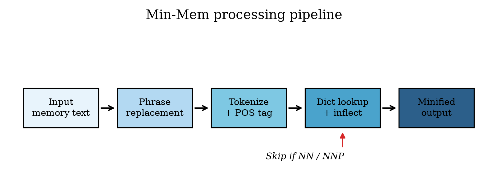

LLM agents hoard verbose text in persistent memory — utilize, in order to, nevertheless.
Min-Mem replaces them with shorter equivalents. Nouns never change. Meaning stays. Context shrinks.
gzip makes bytes smaller but produces unreadable output. Min-Mem keeps human-readable English that LLMs parse identically — just shorter.
The user prefers to utilize Python in order to accomplish data analysis tasks. However, they previously required additional libraries to facilitate the workflow.
The user prefers to use Python to do data analysis tasks. But, they before needed more libraries to aid the workflow.
↓ 27% fewer characters · nouns untouched

Type agent-style memory. See instant minification with sample dictionary rules.
Demo uses client-side rules. Full pipeline uses NLTK POS tagging + 112-entry dictionary. Run locally →
Reproducible comparative study across 15 agent-memory passages and 5 methods. Run yourself: python experiments/run_benchmark.py
Naive dict saves ~1% more chars but corrupts nouns 3% more often. Min-Mem trades tiny size gains for entity safety.
Real agent prompts = system + skills + memory blocks. Min-Mem attacks the memory layer. Proven with local CPU LLM via Ollama.
Same questions asked against verbose vs minified memory. Keyword fact retention measured on qwen2.5:0.5b running on CPU.
Agent prompts pack system instructions, skill definitions, tool schemas, AND memory. Shrinking memory leaves headroom for what actually does work.
Memory stores grow forever. 16%+ character reduction compounds across thousands of entries — no GPU, no retraining.
POS tagging blocks noun replacement. Python, Redis, Acme Corp — never touched. 96%+ noun-tag preservation in benchmarks.
112-entry JSON dictionary. Add synonyms without code changes. CLI + Python API. 7 tests. PRs welcome.
We use branch protection and pull requests. Fork, branch, experiment, open a PR. Dictionary entries and language support especially welcome.
git clone https://github.com/rahiakil/min-mem.git cd min-mem && python3 -m venv .venv .venv/bin/pip install -e ".[dev,experiments]" # Minify text .venv/bin/min-mem minify -v "The user prefers to utilize Python..." # Run all experiments .venv/bin/python experiments/run_benchmark.py .venv/bin/python experiments/agent_context_demo.py